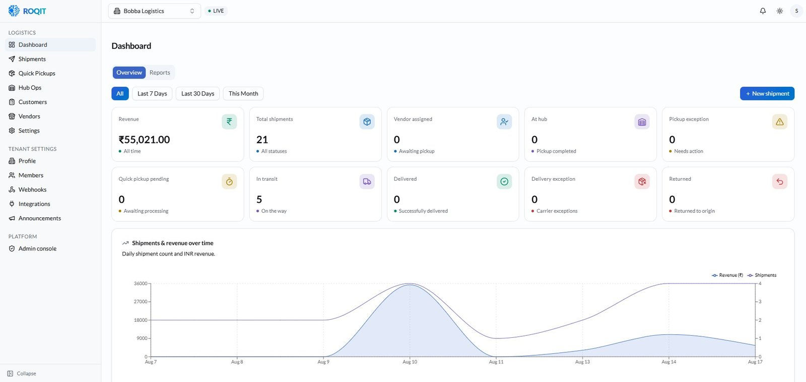

A logistics platform, designed and built from PRD to production.
TL;DR Designed & built a first-mile logistics platform — customer, admin & vendor portals plus a driver app, on the live Emirates SkyCargo API. Live in Bangalore & Hyderabad in 3 months.
Bobba Express is a first-mile logistics platform for the Bangalore and Hyderabad air-cargo markets — booking shipments, generating AWBs against the Emirates SkyCargo API, raising invoices, and dispatching drivers. I designed, built, tested, and shipped it end to end in three months, then watched real customers start booking on it.
The problem
First-mile pickup — getting a shipment from the shipper to the air-cargo hub — was fragmented and manual, spread across phone calls, spreadsheets, and disconnected tools.
The business needed one platform to book pickups, quote freight correctly — including volumetric weight — manage the full AWB lifecycle, and hand off cleanly to carriers. With a lean team and no design-to-engineering handoff, the design problem and the delivery problem were one: whatever I designed, I had to be able to ship.
Scoping & requirements
Building lean, I had to scope the whole system up front — so discovery was mostly mapping the edge cases that only surface in production.
These are the questions I worked through with ops before a single screen — alongside a product manager on scope and priorities and a developer to get the platform production-ready and shipped. The answers became the PRD, the AWB state machine below, and the rules the platform enforces.
Booking lifecycle
Edit or cancel until pickup; one booking to one or many shipments; auto-saved drafts, edit, and duplicate.
Pickup & assignment
Rule-based by zone, vendor, and capacity; scheduled 10am–2pm (after 2pm rolls to next day); OTP or photo pickup proof.
Weight & billing
Dimensional weight vs actual — declared 5 kg but actually 8 kg triggers auto-rebill, hold, or notify.
Exceptions
Scan, OTP, and address failures; two delivery re-attempts; explicit hold reasons and resolution; returns routed hub → customer.
Design approach
I worked it the way you’d work any messy operational problem — widen to understand the real flow, then narrow to a system I could actually ship.
Two diamonds. The first was about the problem: ride along on pickups, watch where the manual process broke, and only then write the PRD and the state machine. The second was about the solution: sketch the intakes on paper, pressure-test them against edge cases, and converge on what shipped.
How a shipment moves
One AWB, five handoffs — customer to carrier, with the hub-ops team in the middle.
Book & generate AWB
Customer creates the shipment in the portal; the system issues the AWB.
Scan & pickup
Vendor scans the parcel on pickup; the AWB goes live in the system.
Route to hub ops
Shipment details flow to the hub-operations app for handling.
Hub verification
Parcels reach the hub; ops verify the boxes against the manifest.
Connect & move
The hub connects the entries; the shipment moves on to the carrier.
Key decisions
Modeled the domain as an explicit AWB state machine.
Rather than ad-hoc statuses, I gave every shipment one source of truth — booking → pickup → hub → manifest → carrier handoff. More upfront modeling, but it made role-based access, tracking, and exception handling tractable instead of brittle.
More modeling upfront, in exchange for a system that stayed tractable as it grew.Three portals and three ways in, on one token system.
A customer portal for self-serve booking, an admin panel for ops, and a vendor portal for the field — all on shared design tokens and a CSS-variable architecture, with components built to WCAG AA (contrast, visible focus, and target sizes), so the product stays consistent, white-labelable, and usable for everyone. Inside booking, I designed three distinct intakes — Single Shipment, Bulk Shipment, and Walk-in Customer — because a self-serve enterprise shipper and a counter agent are not the same user and shouldn’t share a form.
More flows to design and maintain, in exchange for each user meeting a screen built for them.Designed against the live carrier API, not a mock.
I chose to build every shipment on the real Emirates SkyCargo API from day one — so the constraints that would actually bite at go-live (serviceable pincodes, India-origin rules, Master/Child structure) shaped the flow while it was still cheap to change, instead of surfacing as production surprises. The mechanics are in Systems it talks to below.
Real integration cost more coordination upfront, but removed the biggest go-live risk.A driver app built to shorten “assigned” to “moving.”
The revenue lever in first-mile isn’t the booking screen, it’s the gap before a driver actually rolls. I designed the driver app around starting the trip fast and with fewer stalls — so each driver completes more trips per shift, and more completed trips is simply more revenue.
A fourth surface to own, justified by the metric it moves.Systems it talks to
The hardest part of first-mile isn’t the booking screen — it’s making a live carrier system the single source of truth without ever showing the user its seams.
Emirates SkyCargo · carrier API
AWB generation, multi-piece Master/Child modeling, and AWB-level tracking come straight off the live SkyCargo API — no mocking — with invoicing hung off the same source of truth. That meant designing serviceable-pincode limits and India-origin rules as first-class states in the flow, not error dialogs bolted on after — and working through sandbox access and carrier enablement to get there.
Artifact

Outcome
Designed, developed, tested, and shipped in three months, live across Bangalore and Hyderabad. Then the part that matters: it got used. Inside the first two weeks on the market —
Repeat business this early is the signal I trust most: people booked a second time because the first booking worked, not because anyone chased them.